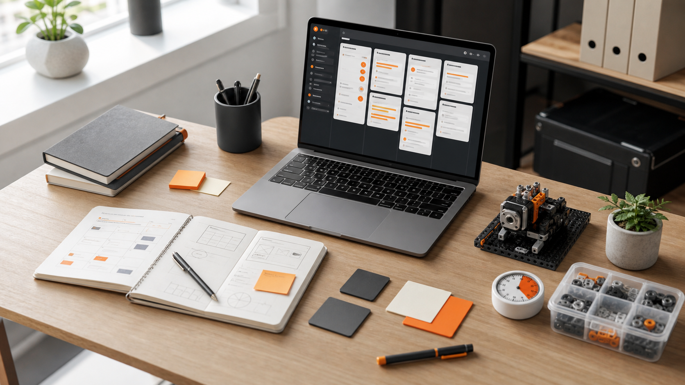

Cách quản lý dự án cá nhân không bị ngợp
Một hệ thống nhẹ để giữ ý tưởng, việc cần làm và tiến độ trong tầm mắt, không biến công cụ quản lý thành một dự án mới.

Dự án cá nhân thường không chết vì thiếu ý tưởng. Nó chết vì có quá nhiều ý tưởng, quá ít thời gian và không có một hệ thống đủ nhẹ để quyết định việc tiếp theo. Tôi từng mở nhiều bảng Notion, nhiều file ghi chú, nhiều checklist, rồi cuối cùng vẫn không biết tối nay nên làm gì.
Tách ý tưởng khỏi việc cần làm
Bước đầu tiên là ngừng đối xử mọi ý tưởng như một task. Ý tưởng là nguyên liệu thô, task là cam kết hành động. Trong hệ thống của tôi, ý tưởng nằm ở một inbox riêng. Chỉ khi một ý tưởng có mục tiêu rõ, kết quả kiểm chứng được và đủ nhỏ để làm trong vài buổi, nó mới được kéo sang bảng triển khai.
Inbox
Nơi ghi nhanh ý tưởng, link tham khảo, lỗi phát hiện và câu hỏi cần nghiên cứu.
Next
Những việc đã rõ đầu ra, đủ nhỏ và có thể bắt đầu ngay trong phiên làm việc tới.
Done
Nơi lưu kết quả, bài học, ảnh demo và quyết định kỹ thuật đã chốt.
Chạy sprint nhỏ thay vì kế hoạch khổng lồ
Tôi chia dự án cá nhân thành sprint 3 đến 5 ngày. Mỗi sprint chỉ có một mục tiêu chính, ví dụ: “robot arm nhận lệnh từ joystick”, “trang portfolio xuất bản được bản đầu”, hoặc “API lưu được dữ liệu thiết bị”. Nếu mục tiêu không thể diễn đạt trong một câu, nó còn quá rộng.
Cách này tạo cảm giác tiến độ thật. Bạn không cần hoàn thành toàn bộ sản phẩm để thấy mình đang đi đúng hướng. Chỉ cần mỗi sprint tạo ra một bản chạy được, một video demo ngắn hoặc một quyết định rõ ràng.
Mỗi task phải có định nghĩa hoàn thành
Một task như “làm giao diện dashboard” rất dễ kéo dài vô hạn. Tôi đổi thành các task có điều kiện hoàn thành cụ thể: “hiển thị danh sách dự án từ dữ liệu mẫu”, “thêm trạng thái empty state”, “responsive ở mobile dưới 390px”. Khi task có điểm dừng, bạn bớt bị ngợp vì biết chính xác lúc nào được chuyển sang việc tiếp theo.
Câu hỏi kiểm tra: sau 45 phút, mình có thể chụp màn hình hoặc quay video chứng minh task này tiến triển không?
Review ngắn, đều, không tự phạt
Cuối tuần, tôi review bằng ba câu hỏi: việc nào đã xong, việc nào đang kẹt, việc nào nên bỏ. Phần “nên bỏ” rất quan trọng. Dự án cá nhân có sức sống khi bạn dám cắt bớt tính năng, cắt bớt kỳ vọng và giữ lại phần tạo giá trị nhiều nhất.
Tôi cũng lưu lại ảnh demo, lỗi thú vị và quyết định kỹ thuật. Sau vài tháng, phần log này trở thành tài liệu học tập tốt hơn rất nhiều so với một checklist đã tick xong rồi bị quên.
Công cụ chỉ là khung đỡ
Bạn có thể dùng Notion, Trello, GitHub Projects hoặc một cuốn sổ. Điều quan trọng là hệ thống phải đủ nhẹ để mở lên trong 10 giây và trả lời được câu hỏi: “Bây giờ làm gì?”. Nếu công cụ yêu cầu quá nhiều trang, nhiều tag và nhiều nghi thức cập nhật, nó sẽ trở thành gánh nặng.
Với HMSlab, tôi giữ hệ thống đơn giản: inbox ý tưởng, bảng sprint, log quyết định và thư viện tài nguyên. Bốn phần đó đủ để đưa một ý tưởng từ ghi chú rời rạc thành sản phẩm có thể demo.
Tiếp tục tối ưu môi trường làm việc của bạn.
Đọc bài về setup